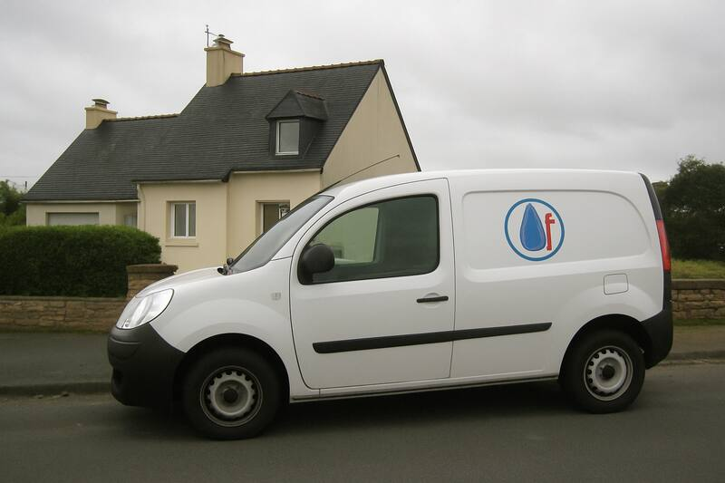
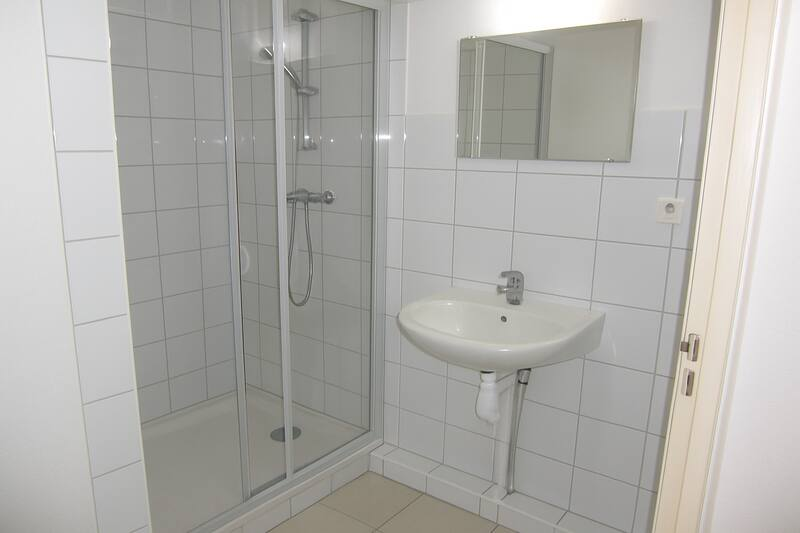
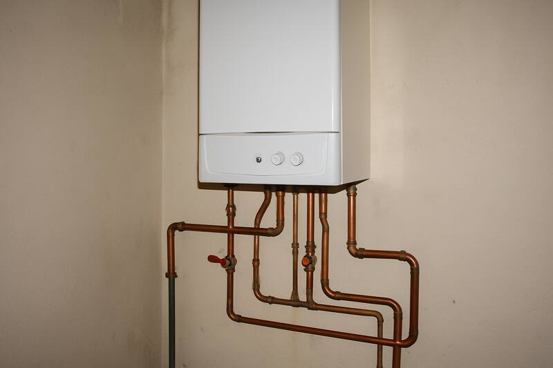

BienvenueBienvenue sur le site de la Plomberie Martin ! Entreprise familiale installée à Rennes, nous intervenons pour tous vos travaux de plomberie, chauffage et salle de bain chez les particuliers et les professionnels. Dépannage rapide 6j/7.    Nos services
Zone d'interventionRennes, Cesson-Sévigné, Saint-Grégoire, Bruz, Chantepie, Pacé et 30 km autour. |
Contactez-nous :
06 00 00 00 00 12 rue des Lilas imaginaires, 35000 Rennes Horaires :
Du lundi au samedi de 8h à 19h — urgences le dimanche Formulaire de contact
Nom : Email : Message : Vous êtes le visiteur n° 004817
|